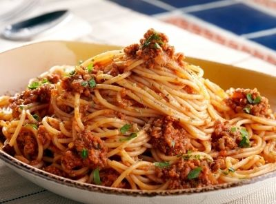

Спагети Болонезе

За тази рецепта
Едно от любимите ми ястия още от коги бех малко сладко момченце са именно спагетите Болонезе!
Сочни, ароматни - те са цяло приключение за вкусовите сетива на всеки един човек и никога не разочароват!
За разлика от рецептата с кекса - тази си е моя и с радост ще ви я споделя. :)
Съставки
- лук - 1 малка глава
- чесън - 2 скилидки
- кайма - 300гр
- доматен сос - 300мл
- моцарела - 300-500гр
- спагети - 300гр
- зехтин - 1-2 супени лъжици
- подправки
- сол
- черен пипер
- риган
- босилек
Приготвяне
- Запържваме каймата в зехтин и я отделяме настрана.
- В същата мазнина запържваме лука и малко преди да е готов, добавяме и чесъна.
- След като лукът и чесънът придобият златист оттенък, добавяме доматения сос и подправките (на вкус).
- Трябва да поври 3-5мин, после добавяме каймата и оставяме да се готви на слаб огън.
- Успоредно с това сваряваме спагетите според инструкциите на пакета им.
- След като спагетите са готови - отцеждаме ги от водата, настъргваме моцарелата върху тях и ги омесваме.
- Добавяме соса към вече равномерно омесените моцарелени спагети и ги разбъркваме добре.
- Сервираме с чаша домашно червено вино от с.Осмар, и се радваме, че сме живи!
Обратно към началната страница